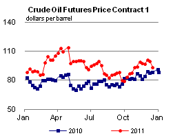

Released: December 21, 2011
Next Release: January 5, 2012
Arctic Oil and Natural Gas Potential
According to an assessment conducted by the U.S. Geological Survey (USGS), the Arctic holds an estimated 13 percent (90 billion barrels) of the world's undiscovered conventional oil resources and 30 percent of its undiscovered conventional natural gas resources. While risks associated with economics, the region's harsh environment, and ongoing territorial disputes are considerable, potential rewards are immense.
At the end of August 2011, ExxonMobil announced that it had partnered with Russian state company Rosneft for the joint exploration and development of hydrocarbon resources throughout the world, including portions of the Arctic's Kara Sea. The American company is not alone among international oil companies wishing to exploit the Arctic's energy resources. Fellow supermajor Shell, for example, filed exploration plans for its acreage in the Chukchi and Beaufort Seas off Alaska, and is hoping to begin drilling in 2012. Britain's Cairn Energy, which has initiated exploratory drilling off Greenland, planned to drill five Arctic wells this year, but has yet to make a commercial discovery.
Despite the massive size of the Arctic's resources, looking to the region as a potential source of commercially viable crude oil production is a relatively recent development. While costs remain high due to harsh environmental conditions, high crude oil prices have made this region more economically attractive. Finding large Arctic oil and natural gas deposits is difficult and costly; developing them into commercially profitable ventures is even more challenging due to the following factors:
Studies on the economics of oil and natural gas projects in onshore Arctic Alaska estimate costs to develop reserves in the region can be 50 to 100 percent more than similar projects undertaken in Texas. Challenges facing natural gas development can be especially daunting. Despite the fact that the Arctic is particularly rich in natural gas, exploitation of those resources could be impeded by the low market value of natural gas relative to that of oil and because the world's natural gas consumers live far from the region and the long-distance transportation of natural gas is considerably more expensive than that for oil and natural gas liquids.
Weather conditions can be particularly challenging in that both colder-than-normal and warmer-than-normal conditions can cause problems in the Arctic. Onshore, the marshy Arctic tundra can preclude exploration activities during the warm months of the year, thereby confining exploratory drilling to a few winter months. If summer comes earlier than expected (as was the case in Alaska in April 2009), it can leave equipment stranded and hinder some exploratory well drilling. Similarly, a late onset of winter weather delays construction of the ice roads required to transport heavy equipment across the tundra. Offshore, cold conditions can lead to greater than anticipated ice pack, which can damage offshore facilities, while also hindering the shipment of personnel, materials, equipment, and oil for long time periods. Further challenges are associated with severe weather search and rescue operations.
Political issues stemming from the overlapping and disputed claims of economic sovereignty between neighboring jurisdictions also pose a challenge to resource development in the Arctic. The area north of the Arctic Circle is apportioned among eight countries - Canada, Denmark (Greenland), Finland, Iceland, Norway, Russia, Sweden, and the United States. Under current international practice, countries have exclusive rights to seabed resources up to 200 miles beyond their coast, an area called an Exclusive Economic Zone (EEZ). Beyond the EEZ, countries must demonstrate that the seabed is a "natural prolongation" of the continental shelf in order to claim seabed rights. These practices have led to several overlapping claims between countries. For example, Russia has made a claim that its shelf extends all the way to the North Pole along the Lomonosov Ridge.
Prior to 2011, there were two major disputes regarding the boundaries of EEZs in the Arctic; currently, one of these is ongoing, while the other has been resolved. The ongoing dispute involves the maritime border between the United States and Canada in the Beaufort Sea. This border dispute has led to competing claims over an 8,100 square mile slice of the Sea, with each country considering the slice part of its EEZ. The disputed area is thought to contain significant energy resources. In 2010, Russia and Norway signed a treaty establishing a maritime border between the countries, resolving the status of 67,000 square miles in the Barents Sea. The treaty has since been ratified, opening up the area for mapping and seismic studies of potential hydrocarbon resources.
There are also several competing claims to extended continental shelf seabed rights. However, most of these claims, while potentially important for future resource development, do not involve the Arctic provinces currently believed to hold the most oil. According to the USGS assessment of undiscovered technically recoverable conventional oil and natural gas resources in 25 Arctic provinces, 70 percent (63 billion barrels) of mean undiscovered oil resources is estimated to sit in only five provinces: Arctic Alaska, Amerasia Basin, East Greenland Rift Basins, East Barents Basins, and West Greenland-East Canada (Figure 1). These provinces lie largely in the EEZ of one or more countries. Russia's West Siberian Basin is estimated to have the largest combined oil and natural gas resources among the Arctic Provinces: almost 133 billion barrels of oil equivalent (32 percent of total Arctic resources). However, it is thought that most of those resources are natural gas.
Figure 1. Resource Basins in the Arctic Circle Region

Arctic oil and natural gas resources are not evenly distributed among the Eurasian and North American continents. In general, the North American regions of the Arctic tend to possess more oil resources, while the Eurasian regions tend to be more gas-rich.
Beyond the economic and political challenges, environmental issues and regulatory permitting also figure prominently in Arctic exploration and production. Environmental issues pertain to the preservation of animal and plant species unique to the Arctic, particularly tundra vegetation, caribou, polar bears, seals, whales, and other sea life. Of particular concern is the capability of existing technology to handle offshore oil spills in an arctic environment; spills among ice flows and can be much more difficult to contain and clean up than spills in open waters.
Despite the many challenges, the recent activity on the part of ExxonMobil, Rosneft, Shell, and Cairn is evidence that interest in Arctic hydrocarbon resources is increasing. With most analysts expecting continued high crude oil prices, this interest will likely continue in the future. Timing of specific exploration and development activities remains highly uncertain. With major territorial disputes not likely to have an impact on resource development in the near term, producers still need to find ways to extract oil and natural gas in an economic and environmentally acceptable manner, something that has and will continue to differ across countries and development tracts.
Gasoline and diesel prices fall again
The U.S. average retail price of regular gasoline fell almost six cents this week to reach $3.23 per gallon. The average price is $0.25 per gallon higher than last year at this time. The Rocky Mountain region led the way, with the retail price plunging almost a dime compared to last week. The average price in the Midwest was eight cents lower than last week. The West Coast gasoline average registered a decline of six cents; however, the price in the region remained the highest in the country at $3.49 per gallon. The Gulf Coast declined about five cents on the week to the lowest regional average price at $3.04 per gallon. Rounding out the regions, gasoline sold for an average of three and a half cents less on the East Coast this week compared to last week.
The national average diesel price fell for the fourth straight week, shedding almost seven cents to hit $3.83 per gallon. The diesel price is $0.58 per gallon higher than last year at this time. This was the biggest weekly decrease in the average diesel price since May 2010. Diesel prices were down across all the regions with the largest decrease occurring in the Midwest, where the diesel price tumbled more than eight cents below last week's average. The Rocky Mountain average diesel price dropped almost eight cents. The West Coast and Gulf Coast average prices both were down almost seven cents. The East Coast diesel average held the most ground as the price in the region moved down about four cents versus last week.
U.S. residential heating oil price declines
Residential heating oil prices decreased during the week ending December 19, 2011. The average residential heating oil price fell by $0.04 per gallon last week to reach a price of $3.82 per gallon, an increase of $0.56 per gallon from the same time last year. The wholesale heating oil price decreased by $0.10 per gallon last week to $2.88 per gallon, $0.32 per gallon more than last year at this time
The average residential propane price increased by less than $0.01 per gallon to $2.86 per gallon, which is $0.18 per gallon higher than last year. Prices increased or remained flat in all regions. The wholesale propane price decreased by $0.10 per gallon to $1.33 per gallon. This was a decrease of $0.06 per gallon when compared with the December 20, 2010 price of $1.39 per gallon.
Propane inventories post first major seasonal drop
U.S. inventories of propane marked the first major seasonal outflow with a hefty 2.3-million-barrel drop to end at 56.9 million barrels. With last week's decline, stocks are still positioned in the lower half of the 5-year range for this time of year. The bulk of the draw occurred in the Midwest region, which fell by 1.1 million barrels. Meanwhile, the Gulf Coast regional stocks dropped by 0.9 million barrels, the East Coast was down 0.2 million barrels, and the Rocky Mountain/West Coast inventories declined by 0.1 million barrels. Propylene non-fuel use inventories represented 8.9 percent of total propane inventories.
Text from the previous editions of This Week In Petroleum is accessible through a link at the top right-hand corner of this page.
| Retail Data | Changes From | Retail Data | Changes From | ||||
| 12/19/11 | Week | Year | 12/19/11 | Week | Year | ||
| Gasoline | 3.229 | Heating Oil | 3.823 | ||||
| Diesel Fuel | 3.828 | Propane | 2.855 | ||||
|  | |||||||||||||||||||||||||||
|
|||||||||||||||||||||||||||
| *Note: Crude Oil Price in Dollars per Barrel. | |||||||||||||||||||||||||||
 |
|||||||
| Stocks Data | Changes From | Stocks Data | Changes From | ||||
| 12/16/11 | Week | Year | 12/16/11 | Week | Year | ||
| Crude Oil | 323.6 | Distillate | 139.1 | ||||
| Gasoline | 218.4 | Propane | 56.887 | ||||